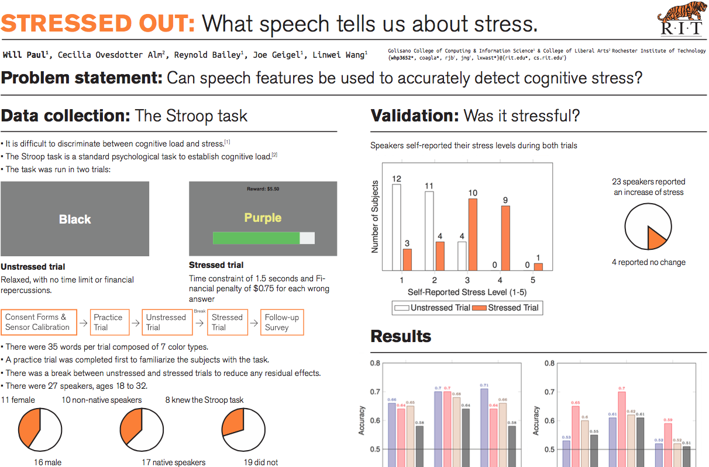

Stressed Out NLP research
An automatic stress detection system using speech data.
Stress can have a negative and costly impact on people’s lives. Mitigating stress before it becomes a problem requires early, noninvasive identification and a deeper understanding of the signals of stress. To test automatic stress detection we created a new dataset with subjects completing the Stroop task under unstressed and stressed conditions. We then used supervised classification algorithms to try to discriminate between the stressed and unstressed condition. I was a primary author on two papers that came out of this project and presented both at Interspeech 2015 in Dresden and FAAVSP 2015 in Vienna.
Features were extracted from recorded speech data and trained with several classification algorithms. We explored binary classification of stressed vs. unstressed across gender and per gender, with the best results on a held-out test set improving over the majority class baseline (MCB) by 16% across genders and with 20% and 21% for the female and male subsets respectively. Overall maximum intensity emerged as the most informative feature when comparing across classification conditions. In addition, we explored leave-one subject out classification, resulting in a 15% improvement on average considering both genders when using random forests.